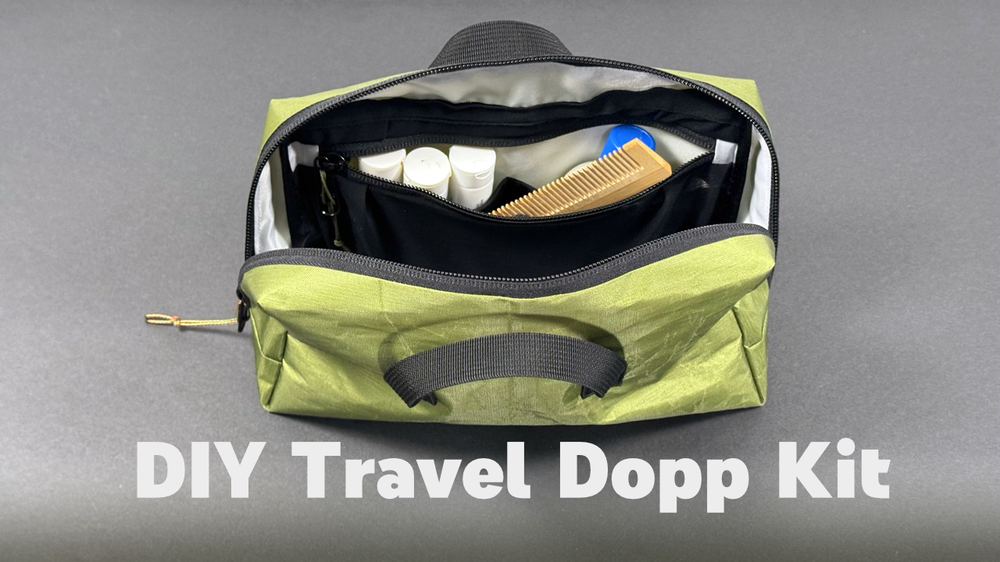

{kind=link}
{kind=link}
{kind=link}
{kind=link}
{kind=link}
{kind=link}
{kind=link}
Purpose Built
A refined toiletry organizer for frequent travelers who value clean construction, smart storage, and a professional finish.
The geometric tapered shape adds structure and a modern look without bulky padding, packing easily into your Porter Pony while holding everyday essentials.
A fully lined interior with minimal bound seams creates a polished result that feels more like technical gear than a basic zipper pouch. It is a satisfying project that builds useful skills and becomes a go-to travel piece.
The interior layout is designed for real use. Stretch zipper pockets keep small items contained and visible, while hidden elastic slip pockets underneath hold bottles, tubes, and grooming tools upright.
An open center compartment stores bulkier items like glasses, deodorant, chargers, and other travel necessities, making packing faster and more organized.
Designed for Travel
- Stays Organized in Motion: Stretch zipper pockets and elastic slip pockets keep small items contained and bottles upright instead of rolling around.
- Fast Access Layout: See and grab what you need quickly without digging through a single deep compartment.
- Counter-Free Setup: External handle loops let the kit hang from a small hook or towel bar in tight or shared spaces.
- Structured Without Bulk: Shaped panels create a stable form that holds its shape in your bag without foam or heavy padding.
- Built Like Technical Gear: Clean lining construction and bound seams give a durable, professional interior finish.
- Easy to Personalize: Fabric choices, mesh colors, and zipper combinations make this a fun repeat project and a great custom gift.